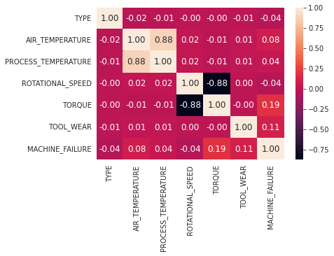
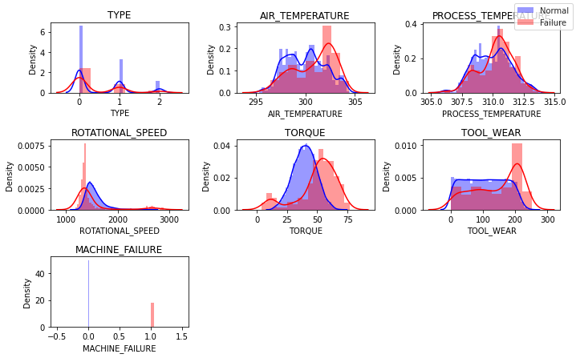
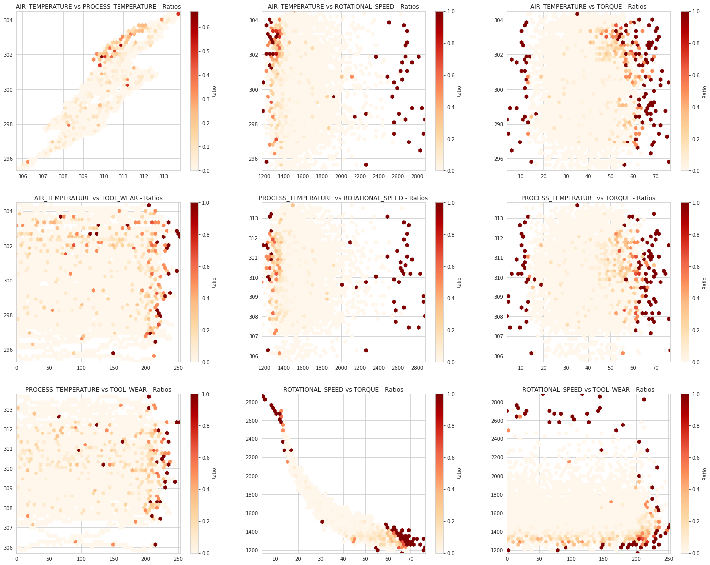

Applied Predictive Maintenance
Part 3 of 6: "Exploratory Data Analysis"
Author: Josh Patterson
Date: Sept 2021
Other entries in this series:
- Part 1: Making the Business Case for Predictive Maintenance
- Part 2: Sensor Data Ingest, Storage, and Analysis with Snowflake
- Part 3: Exploratory Data Analysis
- Part 4: Machine Learning Workflows with Sci-Kit Learn to Build Predictive Maintenance Models
- Part 5: Analyzing the Results
- Part 6: Going to Production with Snowpark
Introduction
In the last post in this series on Applied Predictive Maintenance, the ACME Tool Co. Data Science (ATDS) team built out their data management platform on cloud-based Snowflake data warehouse and got a notebook connected to it from Google Colab.
In this post the team will explore the data in Snowflake (via Google Colab) with an exploratory data analysis (EDA) workflow as a first step in understanding the dataset before they start any statistical modeling work.
This section of the series is based directly on the EDA Workflows chapter in our online book for "Applied Data Science Methods"
Key Take-Aways from this post:
- Understanding the role of Exploratory Data Analysis
- Hands-on experience with Jupyter notebooks on Google Colab
- Learning how to inform a machine learning workflow based on conclusions from an EDA workflow
So let's jump right into "What is EDA?"
What is Exploratory Data Analysis (EDA)?
Exploratory Data Analysis (EDA) is an approach to exploring and understanding a dataset. EDA is a process that helps a data scientist make sense of the data they are working with before they move on and start building machine learning models.
Some consider EDA a bit of an art form, others call it a "philosphy". In this article we try and give the reader some guidelines to work from to further evolve their own "EDA philosophy".
The purpose of EDA is to find missing data and other mistakes before they cause issues downstream in the modeling process. EDA also allows the data scientist to gain insight into the data set and its underlying structure. We'd like to find the best model that can fit the dataset with a minimum number of features and EDA can help inform that process. EDA also helps check assumptions about the data and create a list of outliers in the data. Finally, EDA can help us note the most influential variables in the dataset which helps make the modeling process more effective.
So now that we know what EDA is, let's define a generalized workflow that can help us perform EDA (keeping in mind that this workflow may/will be adapted to different situations as the data requires).
A general way to think about performing EDA on your data is:
- Start with the raw data loaded into a dataframe in python / notebook
- convert target variable into usable format
- drop unneeded columns
- check for NA values, duplicate data entries
- split data on DV and calculate mean, then plot frequency distributions
- compare distributions of features per class
- run correlation matrix
- pair plots
Let's now apply some of these concepts to the UCI predictive maintenance dataset.
Exploratory Data Analysis of the Predictive Maintenance Data
In the embedded frame below you can see the notebook we used for the analysis of the data. If you'd like to try the notebook live, click on this link to google Colab (you'll need to use your own Snowflake credentials and have ingested the UCI predictive maintenance data from part 2 in this series).
For this specific predictive maintenance dataset we use the following EDA steps as listed below:
- mapped categorical variables to numeric values
- checked for missing values
- checked the means of each features grouped by dependent variable ("failure")
- Plot frequency distributions of the features to visualize which features capture the most variability
- Plotted Corrlation matrix
- Created box plots for cat variables
- Created hexbins (to fix overplotting)
So now let's take a look what at what happened in these steps and understand what the step told us about the predictive maintenance data (we skip the details on discussing a few things, such as removing NA records, but you can check this out for yourself in the live notebook).
General Analysis of Dataset Properties
After we have done some basic cleanup on the data (categorical conversion, checked for missing values, etc), we group the records by the dependent variable (MACHINE_FAILURE) and look at the mean of different features for both the classes to see which features capture the variability. We can see the results from the notebook in the table below.
| MACHINE_FAILURE | AIR_TEMPERATURE | PROCESS_TEMPERATURE | ROTATIONAL_SPEED | TORQUE | TOOL_WEAR |
|---|---|---|---|---|---|
| 0 | 299.973999 | 309.995570 | 1540.260014 | 39.629655 | 106.693717 |
| 1 | 300.886431 | 310.290265 | 1496.486726 | 50.168142 | 143.781711 |
The two variables that show variability of note are TORQUE and TOOL_WEAR. Let's now move on and check out the distribution of the two classes (Normal, Failure) in the dataset.
Imbalanced Data is Everywhere
Outside of academic or toy datasets we rarely find datasets that are balanced. Most of the time in enterprise data science you will be dealing with highly imbalanced data and the exploratory data analysis process helps us confirm that in any dataset.
Examples of domains with highly imbalanced classes include:
- manufacturing defect rates (0.1% positive class)
- Fraud detection (0.1% positive class)
- HIV screening (0.4% positive class)
- advertising click-through response rates (0.09% positive class)
Sometimes our minority class is so small we have to take special measures in how we treat it in the modeling process. In the next article we'll look at some ways to mitigate class imbalance in our machine learning workflow.
In the code output below (from the notebook), we can see the results of some quick class counts on the data.
Total records in dataset: 10000 Total normal records in dataset: 9661 Total failure records in dataset: 339 Percent failure records in dataset: 0.0339
As suspected, the failure class occurs rarely (~3%) in the dataset, confirming our suspicions that this dataset is an imbalanced class dataset. This percent may sound low, but compared to some of the other imbalanced dataset examples in the sidebar, its sounds typical for the industry.
Analysis of Numerical Variables
To better understand our data let's plot the correlation matrix. The correlation matrix shows which variable pairs are correlated and is useful to understand which variables we might drop during the machine learning workflow process. We can see the correlation matrix of the variables below.

Given the domain knowledge of the team (working in manufacturing), they instantly recognize that it makes sense that PROCESS_TEMPERATURE and AIR_TEMPERATURE correlating strongly (0.88) makes sense given that machines that are operating faster create more heat.
The ATDS team also notices the negative (-0.88) correlation between TORQUE and ROTATIONAL_SPEED, which makes sense as well.
JAMES notes: For the correlation matrix: DROP categoricals Data is highly skewed Spearman vs pearson (look into this)
Another useful visualization method is the frequency distribution graph. It shows visually which independent variables can provide signal for the dependent variable prediction.
In the graph below we can see the frequency distribution of the features visualized.
what did the frequence distribution histogram tell us?
The plots above indicate that the variables TORQUE and TOOL_WEAR both provide some signal for our dependend variable (MACHINE_FAILURE) prediction.
What about the pair plots (hexbins)?
The hexbin pair plots above show [what] and that correlates with [what-what].
Use Hexbins for Dense Pair Plots
Normally you'll see a stock pair plot, but with the density and count of our data points we needed to make sure and not hide data with overplotting. Hexbins allow us to see how data builds up in dense areas.
In the above pair plots we left one variable out (on purpose): the variable TYPE. This is because TYPE is a categorical variable and it does not plot well in a pair plot.
Analysis of Categorical Variables
Categorical variables have to be visualized differently than numerical variables. Instead of the pair plots we used above, a great way to visualize categorical variables is to create a box plot for each combination of { categorical_var, numerical_var } in our dataset. We have a single categorical variable in our dataset (TYPE) and we can see it visualized with box plots below.
If you'll notice in the plot above, in none of the plots do we see a significant difference in the box plots of the TYPE variable vs the numeric variables when grouped visually by the type value.
At this point we have done a decent job of exploring the data, let's now summarize what initial conclusions we can make to help inform the statistical modeling process.
Sensor Data Conclusions from EDA
In this section we summarize our findings from the EDA process for the predictive maintenance dataset.
Through EDA the ATDS team found that the data:
- has some features that have predictive value
- is highly imbalanced
We summarize both finds below.
Feature Analysis Summary
In terms of predictive signal, the most interesting independent variables appear to be:
- TORQUE
- TOOL_WEAR
Class Analayis Summary
Based on the class analysis of the dataset we only have 3% instances of the failure ("positive") class in the dataset, indicating we need to consider methods to deal with class imbalance in our machine learning workflow.
Now that we have some basic understanding of what is in the data, the ATDS team can move on to the next phase.
Looking for Analytics Help?
(This is an Ad)Our team can help -- we help companies with Snowflake analytics.
Next Steps: Build a Machine Learning Workflow
The value of EDA is that it informs us on "how to better set up our machine learning workflow". The imbalanced nature of the classes in the dataset will have a non-trivial impact on how we configure our machine learning workflow.
We now have a good idea on where to start modeling, but how do we know when to stop modeling?
In this next post in this series we'll explore some ways to analyze the progress our modeling workflow is making towards our key business goals.